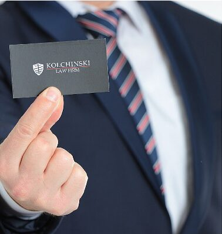

נדל״ןReal estate
עסקאות מכר, רכישת דירה והעברת זכויות.Sales, buying a flat and transfer of rights.
קונספט לדוגמה שנבנה עבור משרד עורך דין אזרחי מסחרי ודים לירן קולצינסקי · זה אינו האתר הרשמי של העסקA sample concept built for the civil & commercial law office of Vadim Liran Kolchinski · This is not the business’s official website

משרד עורך דין אזרחי מסחרי ודים לירן קולצינסקי, בדרך העצמאות 84 בחיפה.The civil and commercial law office of Vadim Liran Kolchinski, at 84 Derech HaAtzmaut, Haifa.
לירן קולצינסקי מנהל בחיפה משרד עורך דין אזרחי ומסחרי: עסקאות נדל״ן, ליטיגציה, הוצאה לפועל ונזיקין.Liran Kolchinski runs a civil and commercial law office in Haifa: real-estate deals, litigation, debt enforcement and torts.
״הוא רואה את המצב בכמה צעדים קדימה.״“He sees the situation several steps ahead.”
משפט אזרחי ומסחרי, מהחוזה ועד בית המשפט.Civil and commercial law, from the contract to the courtroom.
עסקאות מכר, רכישת דירה והעברת זכויות.Sales, buying a flat and transfer of rights.
ייצוג בבית המשפט.Representation in court.
ביקורות בגוגל, דירוג 5.0Google reviews, rated 5.0
ייצוג בתביעות נזיקין.Representation in tort claims.
פתיחה וניהול של תיקי הוצאה לפועל.Opening and running enforcement files.
Адвокат Хайфа
אפשר לפנות גם ברוסית.You can also write in Russian.
ניסוח ובדיקה של חוזים והסכמים.Drafting and reviewing contracts and agreements.
״לירן הפגין מקצועיות יוצאת דופן וידע נרחב בהכנת עסקת מכר מקרקעין. סיפק תובנות חשובות ונקודות תורפה בעסקה המסתמנת.״“Liran showed exceptional professionalism and broad knowledge in preparing a real-estate sale. He gave important insights and pointed out weak spots in the deal taking shape.”
״לאורך כל הדרך קיבלתי ליווי מקצועי, ענייני ויסודי. הוא היה זמין, סבלני, נתן מענה לכל שאלה והרגשתי שאני בידיים טובות.״“All the way through I had professional, matter-of-fact and thorough support. He was available, patient, answered every question, and I felt I was in good hands.”
״לאורך כל הדרך קיבלתי ליווי מקצועי, יסודי ואמין, עם תשומת לב לפרטים הקטנים ותחושת ביטחון אמיתית.״“All the way through I had professional, thorough and reliable support, with attention to the small details and a real sense of confidence.”
״חד, חכם, עושה עבודה יסודית ונכנס לפרטים הקטנים. כמובן שניצחנו במשפט.״“Sharp, smart, does thorough work and goes into the small details. Of course we won the case.”
ביקורות אמיתיות מגוגל, מצוטטות בקיצור.Real Google reviews, shortened; translated from Hebrew.
דרך העצמאות, חיפה · צילום: דוידי ורדי, CC BY 2.5Derech HaAtzmaut, Haifa · photo: Davidi Vardi, CC BY 2.5